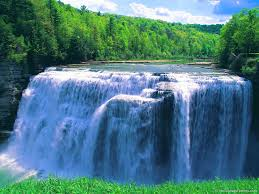
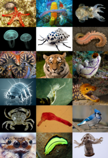
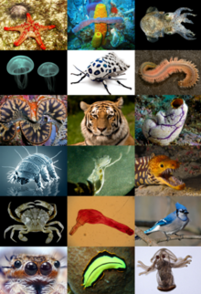

 Water is an inorganic, transparent, tasteless, odorless, and nearly colorless chemical substance, which is the main constituent of Earth's hydrosphere and the fluids of all known living organisms. It is vital for all known forms of life, even though it provides no calories or organic nutrients. Its chemical formula is H2O, meaning that each of its molecules contains one oxygen and two hydrogen atoms, connected by covalent bonds. "Water" is the name of the liquid state of H2O at standard ambient temperature and pressure. It forms precipitation in the form of rain and aerosols in the form of fog. Clouds are formed from suspended droplets of water and ice, its solid state. When finely divided, crystalline ice may precipitate in the form of snow. The gaseous state of water is steam or water vapor. Water moves continually through the water cycle of evaporation, transpiration (evapotranspiration), condensation, precipitation, and runoff, usually reaching the sea. Water covers 71% of the Earth's surface, mostly in seas and oceans.[1] Small portions of water occur as groundwater (1.7%), in the glaciers and the ice caps of Antarctica and Greenland (1.7%), and in the air as vapor, clouds (formed of ice and liquid water suspended in air), and precipitation (0.001%).[2][3] Water plays an important role in the world economy. Approximately 70% of the freshwater used by humans goes to agriculture.[4] Fishing in salt and fresh water bodies is a major source of food for many parts of the world. Much of the long-distance trade of commodities (such as oil, natural gas, and manufactured products) is transported by boats through seas, rivers, lakes, and canals. Large quantities of water, ice, and steam are used for cooling and heating, in industry and homes. Water is an excellent solvent for a wide variety of substances both mineral and organic; as such it is widely used in industrial processes, and in cooking and washing. Water, ice and snow are also central to many sports and other forms of entertainment, such as swimming, pleasure boating, boat racing, surfing, sport fishing, diving, ice skating and skiing Wherever on Planet Earth, we’ll gladly help you find the right place for your trip of a lifetime. A place connected to your deep pure nature, reflected by Nature. Ever thought of connecting with your intuition and the flow of Life by the Water… on an island lodge, for instance? Feel deep inside how the Body can be connected to the Cosmos and make you live in pure consciousness an inner trip… beyond the trip itself. One you’ll never forget which makes vacation transformational. One you’ll never forget, which will open new horizons to you. As a result, “the Best of Nature” labelled Ecolodges are invitations to travel differently. Wherever on Planet Earth, we’ll gladly help you find the right place for your trip of a lifetime. A place connected to your deep pure nature, reflected by Nature. Ever thought of connecting with your intuition and the flow of Life by the Water… on an ecolodge by a lake, for instance? Feel deep inside how the Body can be connected to the Cosmos and make you live in pure consciousness an inner trip… beyond the trip itself. One you’ll never forget which makes vacation transformational. One you’ll never forget, which will open new horizons to you. As a result, “the Best of Nature” labelled Ecolodges are invitations to travel differently.
.jpg) Fire is the rapid oxidation of a material in the exothermic chemical process of combustion, releasing heat, light, and various reaction products.[1][a] Fire is hot because the conversion of the weak double bond in molecular oxygen, O2, to the stronger bonds in the combustion products carbon dioxide and water releases energy (418 kJ per 32 g of O2); the bond energies of the fuel play only a minor role here.[2] At a certain point in the combustion reaction, called the ignition point, flames are produced. The flame is the visible portion of the fire. Flames consist primarily of carbon dioxide, water vapor, oxygen and nitrogen. If hot enough, the gases may become ionized to produce plasma.[3] Depending on the substances alight, and any impurities outside, the color of the flame and the fire's intensity will be different.
Fire in its most common form can result in conflagration, which has the potential to cause physical damage through burning. Fire is an important process that affects ecological systems around the globe. The positive effects of fire include stimulating growth and maintaining various ecological systems. Its negative effects include hazard to life and property, atmospheric pollution, and water contamination.[4] If fire removes protective vegetation, heavy rainfall may lead to an increase in soil erosion by water.[5] Also, when vegetation is burned, the nitrogen it contains is released into the atmosphere, unlike elements such as potassium and phosphorus which remain in the ash and are quickly recycled into the soil. This loss of nitrogen caused by a fire produces a long-term reduction in the fertility of the soil, but this fecundity can potentially be recovered as molecular nitrogen in the atmosphere is "fixed" and converted to ammonia by natural phenomena such as lightning and by leguminous plants that are "nitrogen-fixing" such as clover, peas, and green beans.
Fire has been used by humans in rituals, in agriculture for clearing land, for cooking, generating heat and light, for signaling, propulsion purposes, smelting, forging, incineration of waste, cremation, and as a weapon or mode of destruction.
Fires start when a flammable or a combustible material, in combination with a sufficient quantity of an oxidizer such as oxygen gas or another oxygen-rich compound (though non-oxygen oxidizers exist), is exposed to a source of heat or ambient temperature above the flash point for the fuel/oxidizer mix, and is able to sustain a rate of rapid oxidation that produces a chain reaction. This is commonly called the fire tetrahedron. Fire cannot exist without all of these elements in place and in the right proportions. For example, a flammable liquid will start burning only if the fuel and oxygen are in the right proportions. Some fuel-oxygen mixes may require a catalyst, a substance that is not consumed, when added, in any chemical reaction during combustion, but which enables the reactants to combust more readily.
Once ignited, a chain reaction must take place whereby fires can sustain their own heat by the further release of heat energy in the process of combustion and may propagate, provided there is a continuous supply of an oxidizer and fuel.
If the oxidizer is oxygen from the surrounding air, the presence of a force of gravity, or of some similar force caused by acceleration, is necessary to produce convection.
Fire is the rapid oxidation of a material in the exothermic chemical process of combustion, releasing heat, light, and various reaction products.[1][a] Fire is hot because the conversion of the weak double bond in molecular oxygen, O2, to the stronger bonds in the combustion products carbon dioxide and water releases energy (418 kJ per 32 g of O2); the bond energies of the fuel play only a minor role here.[2] At a certain point in the combustion reaction, called the ignition point, flames are produced. The flame is the visible portion of the fire. Flames consist primarily of carbon dioxide, water vapor, oxygen and nitrogen. If hot enough, the gases may become ionized to produce plasma.[3] Depending on the substances alight, and any impurities outside, the color of the flame and the fire's intensity will be different.
Fire in its most common form can result in conflagration, which has the potential to cause physical damage through burning. Fire is an important process that affects ecological systems around the globe. The positive effects of fire include stimulating growth and maintaining various ecological systems. Its negative effects include hazard to life and property, atmospheric pollution, and water contamination.[4] If fire removes protective vegetation, heavy rainfall may lead to an increase in soil erosion by water.[5] Also, when vegetation is burned, the nitrogen it contains is released into the atmosphere, unlike elements such as potassium and phosphorus which remain in the ash and are quickly recycled into the soil. This loss of nitrogen caused by a fire produces a long-term reduction in the fertility of the soil, but this fecundity can potentially be recovered as molecular nitrogen in the atmosphere is "fixed" and converted to ammonia by natural phenomena such as lightning and by leguminous plants that are "nitrogen-fixing" such as clover, peas, and green beans.
Fire has been used by humans in rituals, in agriculture for clearing land, for cooking, generating heat and light, for signaling, propulsion purposes, smelting, forging, incineration of waste, cremation, and as a weapon or mode of destruction.
Fires start when a flammable or a combustible material, in combination with a sufficient quantity of an oxidizer such as oxygen gas or another oxygen-rich compound (though non-oxygen oxidizers exist), is exposed to a source of heat or ambient temperature above the flash point for the fuel/oxidizer mix, and is able to sustain a rate of rapid oxidation that produces a chain reaction. This is commonly called the fire tetrahedron. Fire cannot exist without all of these elements in place and in the right proportions. For example, a flammable liquid will start burning only if the fuel and oxygen are in the right proportions. Some fuel-oxygen mixes may require a catalyst, a substance that is not consumed, when added, in any chemical reaction during combustion, but which enables the reactants to combust more readily.
Once ignited, a chain reaction must take place whereby fires can sustain their own heat by the further release of heat energy in the process of combustion and may propagate, provided there is a continuous supply of an oxidizer and fuel.
If the oxidizer is oxygen from the surrounding air, the presence of a force of gravity, or of some similar force caused by acceleration, is necessary to produce convection.
.jpg) Earth is the third planet from the Sun and the only astronomical object known to harbor life. According to radiometric dating estimation and other evidence, Earth formed over 4.5 billion years ago. Earth's gravity interacts with other objects in space, especially the Sun and the Moon, which is Earth's only natural satellite. Earth orbits around the Sun in 365.256 solar days, a period known as an Earth sidereal year. During this time, Earth rotates about its axis 366.256 times; that is, a sidereal year has 366.256 sidereal days.[n 6]
Earth's axis of rotation is tilted with respect to its orbital plane, producing seasons on Earth. The gravitational interaction between Earth and the Moon causes tides, stabilizes Earth's orientation on its axis, and gradually slows its rotation. Earth is the densest planet in the Solar System and the largest and most massive of the four rocky planets.
Earth's outer layer (lithosphere) is divided into several rigid tectonic plates that migrate across the surface over many millions of years. About 29% of Earth's surface is land consisting of continents and islands. The remaining 71% is covered with water, mostly by oceans but also lakes, rivers and other fresh water, which all together constitute the hydrosphere. The majority of Earth's polar regions are covered in ice, including the Antarctic ice sheet and the sea ice of the Arctic ice pack. Earth's interior remains active with a solid iron inner core, a liquid outer core that generates Earth's magnetic field, and a convecting mantle that drives plate tectonics.
Within the first billion years of Earth's history, life appeared in the oceans and began to affect Earth's atmosphere and surface, leading to the proliferation of anaerobic and, later, aerobic organisms. Some geological evidence indicates that life may have arisen as early as 4.1 billion years ago. Since then, the combination of Earth's distance from the Sun, physical properties and geological history have allowed life to evolve and thrive. In the history of life on Earth, biodiversity has gone through long periods of expansion, occasionally punctuated by mass extinctions. Over 99% of all species that ever lived on Earth are extinct. Estimates of the number of species on Earth today vary widely; most species have not been described. Over 7.7 billion humans live on Earth and depend on its biosphere and natural resources for their survival.[24]
Main articles: Figure of the Earth, Earth radius, and Earth's circumference
The shape of Earth is nearly spherical. There is a small flattening at the poles and bulging around the equator due to Earth's rotation.[90] To second order, Earth is approximately an oblate spheroid, whose equatorial diameter is 43 kilometres (27 mi) larger than the pole-to-pole diameter,[91] although the variation is less than 1% of the average radius of the Earth.
The point on the surface farthest from Earth's center of mass is the summit of the equatorial Chimborazo volcano in Ecuador (6,384.4 km or 3,967.1 mi).[92][93][94][95] The average diameter of the reference spheroid is 12,742 kilometres (7,918 mi). Local topography deviates from this idealized spheroid, although on a global scale these deviations are small compared to Earth's radius: the maximum deviation of only 0.17% is at the Mariana Trench (10,911 metres or 35,797 feet below local sea level), whereas Mount Everest (8,848 metres or 29,029 feet above local sea level).
Earth is the third planet from the Sun and the only astronomical object known to harbor life. According to radiometric dating estimation and other evidence, Earth formed over 4.5 billion years ago. Earth's gravity interacts with other objects in space, especially the Sun and the Moon, which is Earth's only natural satellite. Earth orbits around the Sun in 365.256 solar days, a period known as an Earth sidereal year. During this time, Earth rotates about its axis 366.256 times; that is, a sidereal year has 366.256 sidereal days.[n 6]
Earth's axis of rotation is tilted with respect to its orbital plane, producing seasons on Earth. The gravitational interaction between Earth and the Moon causes tides, stabilizes Earth's orientation on its axis, and gradually slows its rotation. Earth is the densest planet in the Solar System and the largest and most massive of the four rocky planets.
Earth's outer layer (lithosphere) is divided into several rigid tectonic plates that migrate across the surface over many millions of years. About 29% of Earth's surface is land consisting of continents and islands. The remaining 71% is covered with water, mostly by oceans but also lakes, rivers and other fresh water, which all together constitute the hydrosphere. The majority of Earth's polar regions are covered in ice, including the Antarctic ice sheet and the sea ice of the Arctic ice pack. Earth's interior remains active with a solid iron inner core, a liquid outer core that generates Earth's magnetic field, and a convecting mantle that drives plate tectonics.
Within the first billion years of Earth's history, life appeared in the oceans and began to affect Earth's atmosphere and surface, leading to the proliferation of anaerobic and, later, aerobic organisms. Some geological evidence indicates that life may have arisen as early as 4.1 billion years ago. Since then, the combination of Earth's distance from the Sun, physical properties and geological history have allowed life to evolve and thrive. In the history of life on Earth, biodiversity has gone through long periods of expansion, occasionally punctuated by mass extinctions. Over 99% of all species that ever lived on Earth are extinct. Estimates of the number of species on Earth today vary widely; most species have not been described. Over 7.7 billion humans live on Earth and depend on its biosphere and natural resources for their survival.[24]
Main articles: Figure of the Earth, Earth radius, and Earth's circumference
The shape of Earth is nearly spherical. There is a small flattening at the poles and bulging around the equator due to Earth's rotation.[90] To second order, Earth is approximately an oblate spheroid, whose equatorial diameter is 43 kilometres (27 mi) larger than the pole-to-pole diameter,[91] although the variation is less than 1% of the average radius of the Earth.
The point on the surface farthest from Earth's center of mass is the summit of the equatorial Chimborazo volcano in Ecuador (6,384.4 km or 3,967.1 mi).[92][93][94][95] The average diameter of the reference spheroid is 12,742 kilometres (7,918 mi). Local topography deviates from this idealized spheroid, although on a global scale these deviations are small compared to Earth's radius: the maximum deviation of only 0.17% is at the Mariana Trench (10,911 metres or 35,797 feet below local sea level), whereas Mount Everest (8,848 metres or 29,029 feet above local sea level).
 


.jpg)
.jpg)